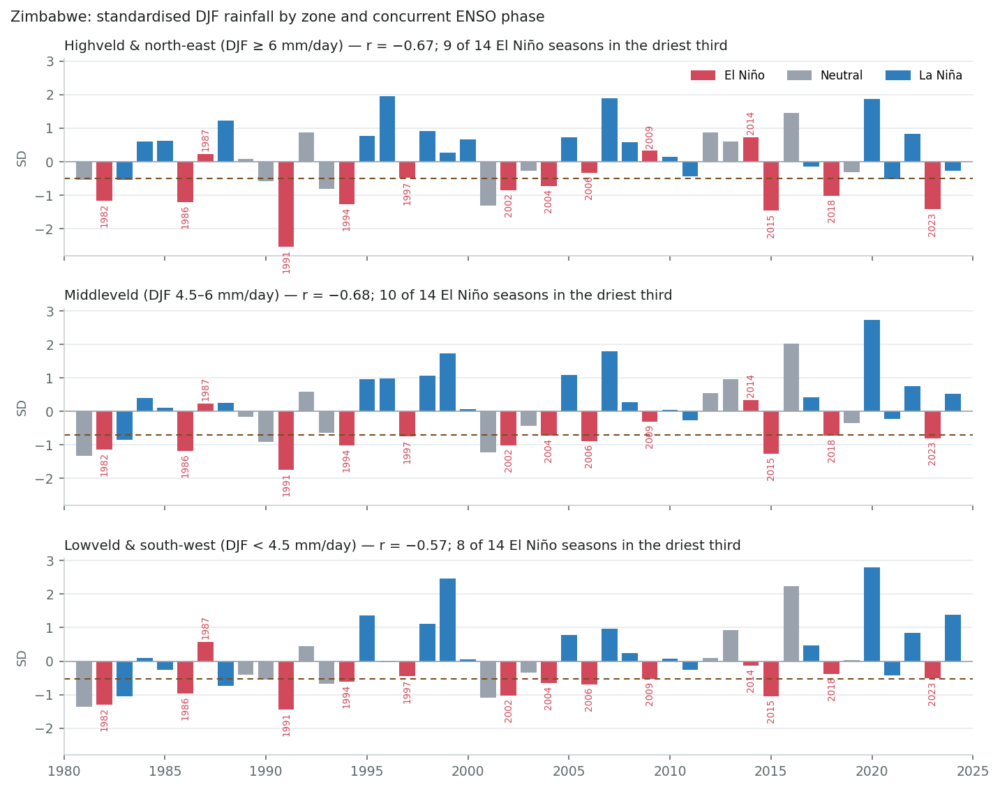

ENSO country deep dive
Zimbabwe
Survey catalogue says
El Niño → drier, DJF
robust source: Mason & Goddard 2001 (BAMS), from the southern-Africa row (Zimbabwe, Zambia, Malawi, Mozambique, South Africa, Botswana)
This review assesses
El Niño → drier, whole country, OND–JFM, peaking DJF
robust The best-documented ENSO–rainfall link in southern Africa, with Zimbabwe-specific studies going back to 1994; ERA5 gives the strongest national correlation in the survey (DJF r = −0.68) and a uniform response across zones. Main caveat: the 1997/98 miss, when the Indian Ocean overrode the Pacific.
Bottom line. Zimbabwe is the country the southern-Africa row was written for. The catalogue's robust, El Niño → drier DJF grade rests on a literature that starts with Zimbabwe itself — Cane, Eshel and Buckland's 1994 Nature paper forecast Zimbabwean maize yield from Pacific sea-surface temperature — and ERA5 gives it the strongest national correlation in the survey: DJF r = −0.68, every grid cell past −0.3 and 86% of them past −0.5. Unlike Malawi, the signal is not confined to one region or one part of the season: it is already present in OND (r ≈ −0.5), peaks in DJF and holds through JFM, in the wet north-east and the dry south-west alike.
For drought. Of the fourteen El Niño DJF seasons since 1981, nine fell in the driest third and six in the driest fifth; none fell in the wettest third. La Niña seasons went the other way: one of nineteen in the driest third, eleven in the wettest. The El Niño list is the country's drought calendar — 1982/83, 1986/87, 1991/92 (the driest season in the record), 1994/95, 2002/03, 2004/05, 2015/16, 2018/19 and 2023/24 — and the misses are as instructive as the hits: 1997/98, the strongest El Niño of the century, produced a near-normal season, and 1987/88, 2009/10 and 2014/15 were normal or wet.
Recommendation. Keep robust and keep DJF. Add the drought framing to the catalogue row (El Niño roughly doubles the odds of a driest-third season and all but rules out a wet one), note the 1997/98 lesson — the Indian Ocean can override the Pacific — and record that Zimbabwe already has an El Niño anticipatory action plan, so the question here is calibration and timing rather than whether the signal exists.
Why the catalogue says “robust, DJF”
The literature map was built region by region, and Zimbabwe is the anchor of the southern-Africa block. The regional finding — austral-summer rainfall reduced under El Niño and enhanced under La Niña — is sourced to Mason & Goddard's (2001) global probabilistic composite, but for Zimbabwe it is not an inheritance: the country has the longest and most specific ENSO literature in the block, and the composite merely confirms what the national studies found first. The DJF season is right for Zimbabwe, where the signal peaks mid-season; the same window is a compromise for the block's northern members.
What the literature actually supports
Zimbabwe is where the southern-Africa ENSO story was quantified. Cane, Eshel & Buckland (1994) showed that sea-surface temperature in the eastern equatorial Pacific explained more than 60% of the variance in Zimbabwe's national maize yield, with usable lead times of up to a year, and argued the relationship was tighter for yield than for rainfall itself. Phillips, Cane & Rosenzweig (1998) traced the mechanism through the seasonal rainfall pattern to simulated yields. Makarau & Jury (1997) and Unganai & Mason (2002) established the predictability: up to about 70% of the variance in summer rainfall is potentially predictable at long range, most of it in the second half of the season (January–March), with the south more predictable than the north. Mamombe, Kim & Choi (2017) confirm ENSO as the leading driver of interannual variability in the modern record.
The regional mechanism is the same one described for Malawi — a warm eastern Pacific weakens the Angola low and the moisture flux into the subcontinent and shifts the South Indian Convergence Zone offshore — but Zimbabwe sits at the heart of the affected region rather than at its edge, which is why the response is uniform across the country and present from the start of the season. Reason & Jagadheesha (2005) reproduce the recent El Niño impacts in models; Mason & Goddard (2001) place Zimbabwe among the areas with the highest probability of below-normal rainfall in El Niño summers.
Two caveats from the literature. First, the relationship is not stationary: Richard et al. (2000) show the late-summer rainfall–ENSO correlation over tropical southern Africa was close to zero before about 1970 and significant only afterwards, so the 45-year ERA5 window sits entirely in the strong-coupling era. Second, the Indian Ocean can override the Pacific: Manatsa, Chingombe & Matarira (2008) find that when a positive Indian Ocean Dipole and El Niño compete, the Dipole's influence on Zimbabwe's summer rainfall dominates, which is the accepted explanation for the near-normal 1997/98 season that followed the loudest El Niño forecast in the country's history.
Operational record. Zimbabwe has responded to El Niño with national declarations three times in the ERA5 period. On 4 February 2016 the President declared a state of drought disaster after the failed 2015/16 rains, with the food-insecure population rising through the year to about four million. In November 2023 OCHA and partners issued an El Niño anticipatory action plan for October 2023–March 2024, one of the first in the region; the season then collapsed in February and on 3 April 2024 a state of disaster was declared, with more than 80% of the country reporting below-normal rainfall and an appeal of about two billion dollars. The 1991/92 drought, before the national forecasting system existed, remains the reference event for the region.
What ERA5 shows
Everything in this section is computed from the same ERA5 monthly grid and NOAA Niño3.4 index the survey uses, restricted to the cells inside the country. A cell–season is analysed only if that season holds at least a quarter of the cell's annual rainfall and averages at least 0.25 mm/day (the survey's rainy-season and aridity filters).
Seasonal cycle
Zimbabwe has a single summer rainy season from November to March: December–February carries about 55% of the annual total and November–March about 89%. The north-east and the eastern highlands are wettest and the Limpopo lowveld in the south and south-west driest, a gradient the country's agricultural natural regions (I to V) follow. The three zone lines are the DJF climatology bands used throughout the page.


Pixel-level correlation with Niño3.4
The four panels tell a simpler story than Malawi's. In OND, before the rains have properly started, the whole country is already brown at −0.3 to −0.5, strongest in the south. In NDJ the correlation deepens to a median of −0.48, and in DJF to −0.57, with 86% of cells past −0.5 and the strongest values across the middleveld and Mashonaland; in JFM it eases to a median of −0.46 but remains past −0.3 in almost every cell, weakest in the far south. There is no part of the country and no part of the season with the opposite sign.
The survey's pixel map therefore shows Zimbabwe as uniformly dark brown, and its country map carries the largest negative value on the continent.

| Season | Cells analysed | Share of annual rain | Median r | Range | Significant (p<0.05) | |r| ≥ 0.30 | |r| ≥ 0.50 |
|---|---|---|---|---|---|---|---|
| OND | 507 / 578 | 30% | −0.41 | −0.61 to −0.20 | 95% negative | 94% | 14% |
| NDJ | 578 / 578 | 47% | −0.48 | −0.68 to −0.30 | 100% negative | 100% | 40% |
| DJF | 578 / 578 | 55% | −0.57 | −0.73 to −0.39 | 100% negative | 100% | 86% |
| JFM | 578 / 578 | 47% | −0.46 | −0.59 to −0.28 | 100% negative | 99% | 26% |
Country-level view (the survey's ADM0 pass)
The country-level pass gives the same shape: correlations of about −0.5 for OND and NDJ, −0.68 for DJF, −0.54 for JFM and a fading −0.35 for FMA, all significant, with the partial correlations (other modes held constant) keeping most of the amplitude. The dry-season windows are filtered by the survey's 25% rainy-season rule and carry no information.
| Trimester | Share of annual rain | Total r (best lag) | Lag (mo) | p | Unique-signal r (partial) |
|---|---|---|---|---|---|
| NDJ | 47% | −0.56 | 0 | 0.000 | −0.29 |
| DJF | 55% | −0.68 | 0 | 0.000 | −0.46 |
| JFM | 47% | −0.54 | 0 | 0.000 | −0.40 |
| FMA | 30% | −0.35 | 0 | 0.018 | −0.07 |
| MAM filtered * | 13% | −0.16 | 0 | 0.302 | +0.03 |
| AMJ filtered * | 5% | −0.16 | 0 | 0.289 | +0.02 |
| MJJ filtered * | 2% | −0.35 | 0 | 0.017 | −0.20 |
| JJA filtered * | 1% | −0.33 | 1 | 0.026 | −0.27 |
| JAS filtered * | 2% | +0.21 | 0 | 0.162 | +0.02 |
| ASO filtered * | 4% | +0.24 | 0 | 0.120 | +0.06 |
| SON filtered * | 13% | −0.34 | 3 | 0.021 | −0.14 |
| OND | 30% | −0.50 | 0 | 0.001 | −0.30 |
* Below the survey's rainy-season filter (trimester climatology under 25% of the annual mean), so the survey never shows these correlations at country level; they are dry-season windows with almost no rain, listed for completeness only.
El Niño and DJF drought
Nationally, El Niño DJF seasons average −0.8 SD, nine of fourteen fall in the driest third and six in the driest fifth, against base rates of 33% and 20%; no El Niño DJF season since 1981 has been in the wettest third. La Niña seasons average +0.6 SD and only one of nineteen was in the driest third. Neutral years supply the remaining droughts: 1981/82, 1990/91, 1993/94 and 2001/02.
The El Niño list reads as the country's disaster history. 1991/92 is the driest DJF in the record by a wide margin and the worst drought in living memory across the region. 2015/16 is second; the rains failed from October and the state of disaster followed on 4 February 2016. 1982/83 and 1986/87 are fourth and fifth. 2023/24 sits ninth on the DJF ranking but the season collapsed late — JFM 2024 is the third-driest and FMA 2024 the driest in the record — and the state of disaster was declared on 3 April 2024 with an appeal of about two billion dollars. 2018/19 combined a weak El Niño with the second-driest OND in the record.
The misses matter for a trigger. 1997/98 was the strongest El Niño of the century and the season was near normal nationally: a strongly positive Indian Ocean Dipole is the usual explanation, and it is the reason Zimbabwean forecasters now weigh the Indian Ocean alongside the Pacific. 1987/88 was on the wet side of normal, and 2006/07, 2009/10 and 2014/15 were near normal. Five of fourteen outside the driest third is a good record for a single index, but it is why an ENSO-only trigger would carry a false-alarm rate of about one in three.
Read as odds: El Niño roughly doubles the chance of a driest-third season and makes a wet one very unlikely; La Niña all but rules out a dry one. The three zones respond alike, with the lowveld and south-west somewhat weaker (zone-mean r −0.57 against −0.67 and −0.68), so a national indicator loses little here — the opposite of the Malawi case.

| ENSO phase (concurrent) | Seasons | Mean anomaly (SD) | In driest third | In driest fifth | In wettest third |
|---|---|---|---|---|---|
| El Niño | 14 | −0.79 | 64% | 43% | 0% |
| Neutral | 11 | −0.05 | 36% | 18% | 36% |
| La Niña | 19 | +0.62 | 5% | 0% | 58% |
Every El Niño DJF season since 1981
| Year | Niño3.4 (DJF) | Rainfall anomaly (SD) | Rank (1 = driest) | Outcome |
|---|---|---|---|---|
| 1982 | +2.16 | −1.26 | 4 of 44 | driest fifth |
| 1986 | +1.13 | −1.19 | 5 of 44 | driest fifth |
| 1987 | +0.71 | +0.36 | 29 of 44 | near normal |
| 1991 | +1.77 | −2.04 | 1 of 44 | driest fifth |
| 1994 | +1.00 | −1.04 | 7 of 44 | driest fifth |
| 1997 | +2.23 | −0.60 | 16 of 44 | near normal |
| 2002 | +0.87 | −1.02 | 8 of 44 | driest fifth |
| 2004 | +0.59 | −0.75 | 13 of 44 | driest third |
| 2006 | +0.66 | −0.67 | 15 of 44 | near normal |
| 2009 | +1.50 | −0.17 | 21 of 44 | near normal |
| 2014 | +0.55 | +0.35 | 28 of 44 | near normal |
| 2015 | +2.50 | −1.34 | 2 of 44 | driest fifth |
| 2018 | +0.75 | −0.76 | 11 of 44 | driest third |
| 2023 | +1.79 | −0.98 | 9 of 44 | driest third |
The 14 driest-third DJF seasons: 1981 (Neutral), 1982 (El Niño), 1983 (La Niña), 1986 (El Niño), 1990 (Neutral), 1991 (El Niño), 1993 (Neutral), 1994 (El Niño), 2001 (Neutral), 2002 (El Niño), 2004 (El Niño), 2015 (El Niño), 2018 (El Niño), 2023 (El Niño). Phase split: El Niño 9, Neutral 4, La Niña 1.

By zone
Zoning by DJF climatology, as a proxy for the natural regions, shows how uniform the response is: zone-mean correlations of −0.67 in the highveld and north-east and −0.68 in the middleveld, with El Niño hit-rates of 64% and 71%; the dry lowveld and south-west is a little less tightly coupled at −0.57 and 57%. Unganai and Mason found the south more predictable than the north at long range, so the weaker concurrent correlation there is not the whole story: its rains depend more on the late season.
| Zone | Cells | Zone-mean r (concurrent) | El Niño composite (median SD) | El Niño years in the zone's driest third | Per-cell median |
|---|---|---|---|---|---|
| Highveld & north-east (DJF ≥ 6 mm/day) | 187 | −0.67 | −0.73 | 64% | 64% |
| Middleveld (DJF 4.5–6 mm/day) | 209 | −0.68 | −0.70 | 71% | 64% |
| Lowveld & south-west (DJF < 4.5 mm/day) | 182 | −0.57 | −0.63 | 57% | 57% |

By province: the same numbers from the team's ERA5 raster stats
The zones above are analysis bands; operational units are provinces. This section repeats the headline-season analysis on the team's standard per-admin ERA5 raster stats (monthly means per admin-1 unit from public.era5, the same table the SEAS5 skill app and the drought triggers use), so nothing here is recomputed from pixels: each province's season series is the stored mean, correlated with concurrent Niño3.4 and ranked against its own history.
By province the picture is as uniform as the zones suggested: concurrent DJF correlations run from −0.71 in Mashonaland East to −0.52 in Matabeleland South, and in every province at least eight of the fourteen El Niño seasons were in the province's own driest third, against fewer than one in six La Niña seasons. The north-east couples most tightly to the Pacific; the far south-west least, in line with Unganai and Mason. Set against that, FEWS NET's October 2026–January 2027 projection puts the largest Phase 3 shares in Matabeleland North and Masvingo (about three quarters of their area) and Manicaland (60%), with Matabeleland South and Mashonaland Central around 40%: the provinces where drought exposure and food insecurity overlap most are Masvingo, Matabeleland North and Manicaland.

| Province | ERA5 pixels | r (concurrent) | El Niño mean (SD) | El Niño seasons in driest third | La Niña in driest third | FEWS NET Phase 3+ Oct 2026–Jan 2027 (ML2) | El Niño driest-third seasons |
|---|---|---|---|---|---|---|---|
| Mashonaland East | 1096 | −0.71 | −0.82 | 64% of 14 | 5% | 24% | 1982, 1986, 1991, 1994, 1997, 2002, 2015, 2018, 2023 |
| Manicaland | 1231 | −0.69 | −0.79 | 64% of 14 | 10% | 60% | 1982, 1986, 1991, 1994, 1997, 2002, 2004, 2015, 2018 |
| Harare | 33 | −0.68 | −0.78 | 71% of 14 | 5% | 0% | 1982, 1986, 1991, 1994, 1997, 2002, 2004, 2015, 2018, 2023 |
| Mashonaland West | 1958 | −0.65 | −0.78 | 64% of 14 | 5% | 2% | 1982, 1986, 1991, 1994, 2002, 2004, 2015, 2018, 2023 |
| Midlands | 1700 | −0.64 | −0.75 | 71% of 14 | 5% | 20% | 1982, 1986, 1991, 1994, 1997, 2002, 2006, 2015, 2018, 2023 |
| Matabeleland North | 2586 | −0.62 | −0.78 | 71% of 14 | 5% | 74% | 1982, 1986, 1991, 1994, 2002, 2004, 2006, 2015, 2018, 2023 |
| Mashonaland Central | 958 | −0.61 | −0.66 | 64% of 14 | 15% | 36% | 1982, 1986, 1991, 1994, 1997, 2002, 2015, 2018, 2023 |
| Masvingo | 1960 | −0.59 | −0.72 | 57% of 14 | 15% | 74% | 1982, 1986, 1991, 2002, 2004, 2009, 2015, 2018 |
| Bulawayo | 17 | −0.59 | −0.69 | 71% of 14 | 10% | 0% | 1982, 1986, 1991, 1997, 2002, 2004, 2006, 2015, 2018, 2023 |
| Matabeleland South | 1873 | −0.52 | −0.61 | 64% of 14 | 10% | 45% | 1982, 1986, 1991, 2002, 2004, 2006, 2009, 2015, 2023 |
Can SEAS5 forecast it? Skill of the Sep issuance, by zone
A teleconnection is only useful for anticipatory action if the seasonal forecast can carry it. The figure reads the seas5-skill app's per-pixel skill cube — the temporal Pearson r between the detrended ECMWF SEAS5 trimester forecast and detrended ERA5, per 0.4° pixel — for forecasts issued on 1 Sep, sampled at this page's cells and summarised as the median pixel r per zone. Bins are the app's (low < 0.30 ≤ moderate < 0.50 ≤ high). Each point is one three-month window the issuance covers, drawn on its middle month under the rainy-season climatology, so the reader sees which part of the season each forecast window reaches and how much skill it has there.
Zimbabwe is where SEAS5 has the most to offer in southern Africa, and it shows in September already. Read the panel against the climatology: the two windows that carry the season, NDJ and DJF, are two and three months ahead in September and reach moderate skill in every zone (median pixel r 0.41–0.50, with 74–95% of cells qualifying), a level Malawi's September issuance never reaches at any lead. The shoulders are weaker: OND is low in the highveld and middleveld and moderate only in the lowveld, and JFM is low everywhere at this lead. The strong ENSO teleconnection is what the model is carrying; in a neutral year the same lead times will have less to say. The practical reading is that a September issuance is already a usable forecast checkpoint for the core of Zimbabwe's season, with the November issuance to confirm.
What the Sep 2026 issuance forecasts. Windows at or beyond the app's 3-year return-period threshold, by zone (in-season windows excluded): Highveld & north-east: SON dry 7 yr (low skill), OND dry 46 yr (low skill), NDJ dry 23 yr (moderate skill), DJF dry 23 yr (moderate skill), JFM dry 23 yr (low skill); Middleveld: SON dry 5 yr (low skill), OND dry 23 yr (low skill), NDJ dry 23 yr (moderate skill), DJF dry 15 yr (moderate skill), JFM dry 15 yr (low skill); Lowveld & south-west: OND dry 15 yr (moderate skill), NDJ dry 23 yr (moderate skill), DJF dry 15 yr (moderate skill), JFM dry 12 yr (low skill); Whole country: SON dry 5 yr (low skill), OND dry 23 yr (low skill), NDJ dry 23 yr (moderate skill), DJF dry 19 yr (moderate skill), JFM dry 15 yr (low skill). Under the app's rule — an alert needs the return period and at least moderate skill — this issuance would raise an alert for Highveld & north-east NDJ, Highveld & north-east DJF, Middleveld NDJ, Middleveld DJF, Lowveld & south-west OND, Lowveld & south-west NDJ, Lowveld & south-west DJF, Whole country NDJ, Whole country DJF. A return period at the ceiling (about 46 years) means the forecast is the most extreme of the 45-year hindcast for that window, not a calibrated 1-in-46 probability; read it as “beyond the record”.

| Zone | Cells | JAS in-season | ASO in-season | SON 0-mo lead | OND 1-mo lead | NDJ 2-mo lead | DJF 3-mo lead | JFM 4-mo lead |
|---|---|---|---|---|---|---|---|---|
| Highveld & north-east (DJF ≥ 6 mm/day) | 187 | +0.52 high 95% ≥ mod. · wet 5.8 yr | +0.32 moderate 58% ≥ mod. · wet 11.5 yr | +0.01 low 0% ≥ mod. · dry 6.6 yr | +0.18 low 19% ≥ mod. · dry 46.0 yr | +0.43 moderate 89% ≥ mod. · dry 23.0 yr | +0.41 moderate 88% ≥ mod. · dry 23.0 yr | +0.28 low 30% ≥ mod. · dry 23.0 yr |
| Middleveld (DJF 4.5–6 mm/day) | 209 | +0.49 moderate 92% ≥ mod. · wet 11.5 yr | +0.24 low 34% ≥ mod. · wet 11.5 yr | +0.08 low 3% ≥ mod. · dry 4.6 yr | +0.28 low 41% ≥ mod. · dry 23.0 yr | +0.50 moderate 85% ≥ mod. · dry 23.0 yr | +0.42 moderate 74% ≥ mod. · dry 15.3 yr | +0.28 low 44% ≥ mod. · dry 15.3 yr |
| Lowveld & south-west (DJF < 4.5 mm/day) | 182 | +0.63 high 100% ≥ mod. · wet 46.0 yr | +0.26 low 41% ≥ mod. · wet 23.0 yr | +0.20 low 2% ≥ mod. · dry 2.0 yr | +0.31 moderate 58% ≥ mod. · dry 15.3 yr | +0.50 moderate 95% ≥ mod. · dry 23.0 yr | +0.43 moderate 92% ≥ mod. · dry 15.3 yr | +0.27 low 28% ≥ mod. · dry 11.5 yr |
| Whole country | 578 | +0.55 high 96% ≥ mod. · wet 11.5 yr | +0.28 low 44% ≥ mod. · wet 15.3 yr | +0.10 low 2% ≥ mod. · dry 4.6 yr | +0.27 low 39% ≥ mod. · dry 23.0 yr | +0.48 moderate 89% ≥ mod. · dry 23.0 yr | +0.42 moderate 84% ≥ mod. · dry 19.2 yr | +0.27 low 35% ≥ mod. · dry 15.3 yr |
Each cell: median pixel r, its bin, the share of the zone's cells at moderate-or-better skill, and the median return period of the Sep 2026 forecast anomaly (dry = forecast below its hindcast median). Skill source: skill_stats_grid_detrended.nc (seas5-skill, DEV blob), the same cube behind the app's pixel skill map. Median of pixel correlations, not the correlation of the zone mean, so it is a conservative summary for a coherent zone.
Food security context: FEWS NET
FEWS NET's IPC-compatible acute food insecurity classification, from the team's daily mirror of the FEWS NET Data Warehouse (ds-fewsnet-mirror), drawn on FEWS NET's own livelihood-zone × district units. This is the published map — the “not allowing for assistance” series; grey means FEWS NET did not classify the unit, which is not Phase 1. FEWS NET classifies areas, not populations, so the province shares above are shares of area, not people, and FEWS NET's analysis is IPC-compatible but independent of the IPC/CH consensus.
FEWS NET covers Zimbabwe continuously, so the current picture can be set beside the drought exposure. After the 2025/26 harvest no unit is in Phase 3: the June 2026 current situation and the August–September projection are Phase 1 and 2 throughout, with the lowveld and south-west almost entirely Stressed. The medium-term projection for October 2026 to January 2027, the lean season and the first half of the rainy season, puts 57 of 203 units into Phase 3 (Crisis), concentrated in the south and west; the province shares are in the table above. That is the window for which the September SEAS5 issuance forecasts a dry NDJ and DJF at moderate skill. The rightmost panel repeats the El Niño hit-rate map from the drought section so the two can be read together.

Recommendation for the survey
- Keep the grade and the season. Zimbabwe's robust El Niño → drier DJF is the best-supported entry in the block; if anything the row should cite Cane et al. (1994) and Unganai & Mason (2002) alongside Mason & Goddard, since the national literature predates the global composite.
- Add the drought framing to the “This study (ERA5)” column: nine of fourteen El Niño DJF seasons in the driest third, none in the wettest; La Niña one of nineteen in the driest third.
- Record the 1997/98 caveat and the Indian Ocean Dipole as the modifier, so a reader of the map does not take the row as a guarantee.
- Note the early signal. Unlike Malawi, the OND correlation is already about −0.5, so a September ENSO state is actionable for the whole season, and the November SEAS5 issuance is the natural forecast checkpoint.
- For trigger work, a national indicator is defensible here (the zones respond alike), but pair ENSO with the Indian Ocean Dipole or with the seasonal forecast to buy down the one-in-three false-alarm rate that an ENSO-only rule would carry.
Caveats
- ERA5 is a reanalysis; Zimbabwe's gauge network is better than most in the region but has thinned since 2000, so the recent years lean more on the model background.
- Fourteen El Niño seasons is a modest sample; the nine-of-fourteen hit rate has wide uncertainty.
- The zones are DJF-climatology bands, a proxy for the natural regions, not administrative boundaries.
- FEWS NET classifies areas on its own livelihood-zone × district units and publishes no population-in-phase figures; the province shares are shares of unit area (FEWS NET's own admin-1 attribute), not people.
- The country boundary is Natural Earth 110m rasterised with “all touched”, so edge cells straddle Zambia, Mozambique, South Africa and Botswana.
- No field-significance correction is applied at pixel level; read coherent regions, not single cells.
References
- Cane, M. A., Eshel, G. & Buckland, R. W. (1994). Forecasting Zimbabwean maize yield using eastern equatorial Pacific sea surface temperature. Nature 370, 204–205. link
- Phillips, J. G., Cane, M. A. & Rosenzweig, C. (1998). ENSO, seasonal rainfall patterns and simulated maize yield variability in Zimbabwe. Agricultural and Forest Meteorology 90, 39–50. link
- Makarau, A. & Jury, M. R. (1997). Predictability of Zimbabwe summer rainfall. International Journal of Climatology 17, 1421–1432.
- Unganai, L. S. & Mason, S. J. (2002). Long-range predictability of Zimbabwe summer rainfall. International Journal of Climatology 22, 1091–1103. link
- Mamombe, V., Kim, W. & Choi, Y.-S. (2017). Rainfall variability over Zimbabwe and its relation to large-scale atmosphere–ocean processes. International Journal of Climatology 37, 963–971. link
- Manatsa, D., Chingombe, W. & Matarira, C. H. (2008). The impact of the positive Indian Ocean dipole on Zimbabwe droughts. International Journal of Climatology 28, 2011–2029. link
- Richard, Y., Trzaska, S., Roucou, P. & Rouault, M. (2000). Modification of the southern African rainfall variability/ENSO relationship since the late 1960s. Climate Dynamics 16, 883–895. link
- Reason, C. J. C. & Jagadheesha, D. (2005). A model investigation of recent ENSO impacts over southern Africa. Meteorology and Atmospheric Physics 89, 181–205.
- Mason, S. J. & Goddard, L. (2001). Probabilistic precipitation anomalies associated with ENSO. Bulletin of the American Meteorological Society 82, 619–638. link
- Zimbabwe: 2016–2017 Drought Disaster Domestic and International Appeal for Assistance (state of disaster declared 4 February 2016). link
- OCHA (2023). Zimbabwe: El Niño Anticipatory Action Plan, Oct 2023 – Mar 2024. link; UNICEF Zimbabwe (2024). 2024 El Niño induced drought disaster: domestic and international appeal for assistance. link; OCHA (2024). Zimbabwe: Drought Flash Appeal May 2024 – April 2025. link
- FEWS NET Data Warehouse, Zimbabwe IPC-compatible classification, via ds-fewsnet-mirror. Source: FEWS NET.
Generated by enso_deep_dive.py from deep_dives/zwe.toml. Method and data as in the global survey.